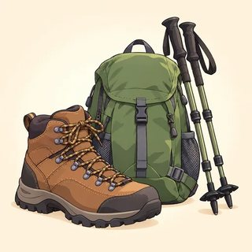

Time, Experience & Past Habits — Classroom Materials
Everything to print for Classes C1–C3: picture flashcards and time-word sort cards, the welcome question cards and the A2 diagnostic grid, new identity cards, the teacher's listening scripts, the timeline interview cards, the "What have you been doing?" clue game, the "How life has changed" discussion cards with roles and talking tokens, and the "Have you ever…?" Find Someone Who.
What to Print
| Set | What | How many | Used in |
|---|---|---|---|
| A | Picture flashcards (experiences, then and now) + time-word sort cards (14) | Flashcards: 1 set for the board · sort cards: 1 set per pair | C1, C2, C3 |
| B | Welcome question cards (12: PAST · PERFECT · FUTURE) + A2 diagnostic grid | Cards: 1 set per 12 learners · grid: teacher only | C1 |
| C | New identity cards (6) | 1–2 sets, on a side table | C1, C2, C3 |
| D | Listening & dictation scripts | Teacher only | C1, C2, C3 |
| E | Timeline interview card + question strip | 1 per learner | C1 |
| F | "What have you been doing?" clue game (18 cards) | 1 deck per group of 3–4 | C2 (and C3 warmer) |
| G | "How life has changed" topic cards (8) + role cards (4) + talking tokens | 1 set per group of 4 · 3 tokens per learner | C3 |
| H | Find Someone Who: "Have you ever…?" (game) | 1 per learner | C2 warmer |
A · Picture Flashcards — Experiences (1.1)
Hold up a card and ask "Have you ever…?" Learners answer and give one past-simple detail. The past participle is under the word.




A · Time-Word Sort Cards (1.1 · 1 set per pair)
Cut out. Pairs put the two heading cards on the desk and sort the 14 time words under them (3 minutes). Then they make one sentence for two cards in each column. Answer: the first seven words after the headings are FINISHED; the last seven are CONNECTED TO NOW. (today / this week = the day or week is not finished yet.)
past simple ➡️● CONNECTED TO NOW
present perfect yesterdaylast week in 2019two days agowhen I was a childon Friday at 8 o'clockevernevertoday this weekso farfor ten yearssince Monday
A · Flashcards — Then and Now (1.3)
Use them in pairs for the lead-in and the drill: "People used to send letters. Now they send messages."


B · Welcome Question Cards (C1 mingle)
One set per 12 learners (print two sets for a bigger class). Each learner takes one card of each color. They ask one question and one follow-up per partner, answer the partner's question in 2–3 sentences, swap cards, and find a new partner. The small line is the follow-up. Every card works with a new identity. None asks about the home country, age, family, migration or health, on purpose.
B · A2 Diagnostic Grid (teacher only · C1)
Listen during the welcome mingle and the report. Mark ✓ easy and accurate · ~ understands, some errors · ✗ not yet. Write one real example in Notes. Keep this page private; compare it with Progress Test 1 in C13.
| Name | PAST SIMPLE went · Did you…? · didn't | PRESENT PERFECT Have you ever…? · I've… | FUTURE going to · will · I'm meeting… | FLUENCY long turns · asks back | Notes (an example I heard) |
|---|---|---|---|---|---|
PAST SIMPLE: "I goed" · "Did you went?" · "I no went." PRESENT PERFECT: "Have you ever went?" · "I have see" · "I've been there last year." FUTURE: "I going to" · "I will to" · "Tomorrow I visit…" (for a plan). FLUENCY: one-word answers · never asks back · stops when a word is missing.
Mostly ✓/~ = ready for B1. Many ~ in PRESENT PERFECT = normal; C1–C2 teach it. ✗ in two or three columns = a private 5-minute oral placement interview this week (toolkit); the A2 course may fit better. ✓ everywhere + strong fluency = stretch tasks from Day 1.
C · New Identity Cards (1.1 · 1.2 · 1.3)
Any learner may use a card instead of their real life, in any task: no reason needed. In C1 use the Experiences part (and the timeline), in C2 the Lately part, in C3 the Then and now part. The people are the same as in the A1 and A2 kits, one year later.
Rosa — hospital cleaner
Experiences: I've finished a computer course. I took it at the library last spring. I've never worked in an office.
Lately: I've been working day shifts since March. I've been sleeping much better!
Then and now: I used to work at night. I would sleep all morning and eat breakfast at 3 p.m.! I didn't use to have much free time.
Timeline: 💻 computer course · ☀️ day shifts (since March) · 🎂 cooked for 30 people
Daniel — bus driver
Experiences: I've driven an electric bus. I drove one for the first time last November. It was so quiet! I've been to three big soccer stadiums.
Lately: I've been painting my kitchen for two weeks. I've painted three walls.
Then and now: Buses used to be loud. Passengers would pay with coins. Now they tap a card or a phone.
Timeline: 🚌 electric bus · ⚽ stadiums · 🎨 kitchen (for two weeks)
Amina — student and mother
Experiences: I've passed my English course. I started a nursing course in September. I've never given an injection… yet!
Lately: I've been studying every night. I've been getting up at five.
Then and now: I used to take the bus everywhere. On Saturdays I would walk the children to the park. I didn't use to drive, but now I do.
Timeline: 🎓 English course · 🩺 nursing course (since September) · 🚗 driver's license
Chen — cook
Experiences: I've opened my own food truck! We opened it in May. I've cooked for 300 people in one day.
Lately: I've been working 12 hours a day. I've been testing new recipes. I've tried twenty!
Then and now: I used to work in a restaurant kitchen. My boss would always choose the menu. I didn't use to have my own customers.
Timeline: 🚚 food truck (May) · 🍜 300 people · 📝 new recipes (lately)
Lucía — grandmother
Experiences: I've learned to use video calls. I called my grandson for the first time last winter. I've never used a laptop.
Lately: I've been walking in the park every morning. I've been taking a dance class since June.
Then and now: People used to write letters. I would wait weeks for a letter from my sister. Now we talk every Sunday on video.
Timeline: 📱 video calls · 💃 dance class (since June) · 🌳 walks
Yusuf — warehouse worker
Experiences: I've gotten my forklift license. I passed the test in April. I've played on a soccer team.
Lately: I've been working at a big warehouse since May. I've been playing soccer every Saturday.
Then and now: I used to look for a job every day. I would send ten emails every morning. I didn't use to have a routine.
Timeline: 🏗️ forklift license (April) · 📦 warehouse (since May) · ⚽ soccer team
D · Listening & Dictation Scripts (teacher reads aloud)
Read at a natural speed with clear pauses, using contractions (I've, she's, haven't) and weak forms (been /bɪn/, used to /ˈjustə/), because that is what learners hear outside class. Read each script twice: once for the main idea, once to check. For two-voice scripts, read both or ask a confident learner to read one part.
1.1-A · Sam's news (Workbook 1.1, Ex 1)
Answers: 1 he's started a new job (hotel receptionist) · 2 two weeks ago · 3 no, never · 4 at a bank, three years · 5 yes, on his first day · 6 learned everyone's name · 7 finished her exams. Opener = present perfect; details = past simple.
1.1-B · Dictation (read each sentence 3 times)
1.2-A · Catching up (Workbook 1.2, Ex 1)
Answers: Lena · driving class · since January · 8 lessons, highway twice. Marco · supermarket · three months · always tired. Marco · guitar · every evening · ten songs. Marco · fixing his bike · just now · dirty hands, fixed the chain.
1.2-B · Dictation (read each sentence 3 times)
1.3-A · Then and now: three voices (Workbook 1.3, Ex 1)
Answers: 1 T · 2 F · 3 T · 4 F · 5 T · 6 F. Follow-up: "Find two used to and two would sentences."
1.3-B · Dictation (read each sentence 3 times; check the spelling of use to)
E · Timeline Interview Card (1.1 · 1 per learner)
Learners draw 4–5 events as pictures or one word in the boxes (left = older, right = more recent; years optional) and one thing that is still true now in the NOW box. Real, a new identity card, or imagined. Then they swap cards and interview each other with the question strip.
Still true now (since… / for…): ______________________
Open (present perfect):
- I see a ___. Have you ever…?
- How long have you…? (for / since)
- Have you… yet?
Details (past simple):
- When did you…? Where did you…?
- Who did you go with?
- What happened? How was it?
Report: "___ has… He / She… last year."
🍞 bread class · 🚲 bike · ✈️ Mexico · 🎸 guitar · NOW: 📚 teach English (since 2020)
"Have you ever made bread?" — "Yes, I have! I took a class two years ago. The first loaf was terrible!"
Still true now (since… / for…): ______________________
F · Game — "What Have You Been Doing?" Clue Cards (1.2)
- Groups of 3–4. Cards face down. Player A takes a card and acts it out or reads the clue as "I": "Look at my hands! There's paint everywhere!" Don't say the activity.
- The others guess: "Have you been …ing?" A answers "Yes, I have!" or "No, I haven't."
- The first correct guess wins the card. The winner asks one How many / How much question, and A answers in the simple: "I've painted two rooms."
- Any logical guess is correct. The gray line is a hint for A only. Most cards wins.


__________________
G · Discussion — How Life Has Changed (1.3)
One set of topic cards and role cards per group of 4. Each group chooses two topics. Every card is about the world, not about any one country. Learners can talk about people in general, a place they know, their own life, or a new identity card.
📱 Phones & keeping in touch
- How did people use to keep in touch with friends far away?
- What would people do on a birthday or a holiday?
- What's different now?
- Better before or now? Why?
🛒 Shopping
- Where did people use to buy food and clothes?
- What would people do every weekend?
- Did people use to shop online?
- Better before or now? Why?
💼 Work
- How did people use to find a job?
- What would a normal workday look like?
- Which jobs used to exist and don't now?
- Better before or now? Why?
🚌 Getting around
- How did people use to find their way? (maps, asking…)
- How would people buy a bus or train ticket?
- What's different now?
- Better before or now? Why?
📺 Free time
- What did people use to do in the evenings?
- What would families do on the weekend?
- Did people use to spend more time outside?
- Better before or now? Why?
🍲 Food & cooking
- Did people use to cook more at home?
- What would people eat on a special day?
- How do people find recipes now?
- Better before or now? Why?
💵 Money
- How did people use to pay for things?
- What would people do on payday?
- Is it easier to save money now?
- Better before or now? Why?
📚 Learning
- How did people use to learn a new skill or a language?
- What would students do in class?
- What's different now? (videos, apps…)
- Better before or now? Why?
Role cards (1 set per group)
🎤 You make everyone talk
Read the question. Ask each person in turn. Invite quiet people: "What do you think, ___?" Say kindly: "Let's hear from someone new."
⏱️ You watch the clock
5 minutes per topic. Say: "Two minutes left!" · "One minute left!" · "Time's up. Next topic!"
❓ You ask one more question
Ask each person one follow-up: "Did people use to…?" · "Why do you think that?" · "Can you give an example?"
📝 You tell the class
Take short notes. At the end say: "Our group thinks it was better before / it's better now, because… Most of us said…"
Talking tokens (3 per learner · or use paper clips or beans)
Put one token in the middle when you take a long turn. When your tokens are gone, you can ask questions, but wait to give opinions until everyone has used theirs.
H · Game — Find Someone Who… "Have you ever…?" (C2 warmer)
Photocopy one per learner. Learners stand, walk and ask "Have you ever + past participle…?" If the answer is "Yes, I have," they write the name and ask the past-simple follow-up. One name per box; ask each person only one or two questions, then move on. At the end, report: "Omar has met a famous person. He met a soccer player at the airport!"
| Find someone who… | Name | Follow-up (past simple) |
|---|---|---|
| 1. has cooked for more than ten people | What did you cook? | |
| 2. has met a famous person | Where did you meet him / her? | |
| 3. has been to a big concert | Who did you see? | |
| 4. has run a race | How long did it take? | |
| 5. has never eaten sushi | Would you like to try it? | |
| 6. has sung in public | What did you sing? | |
| 7. has had the same phone for more than two years | Where did you buy it? | |
| 8. has known a friend since they were a child | How did you meet? | |
| 9. has already done the online lesson 1.1 | What did you learn? | |
| 10. hasn't checked their phone yet today | Really? When did you last check it? | |
| 11. has won a prize or a competition | What did you win? | |
| 12. has learned something new this year | How did you learn it? |
Drill the question first: "Have you ever met…? · Have you ever been to…? · Have you ever run…?" (participles on the board: met, been, run, eaten, sung, had, known, done, checked, won, learned). Short answers: "Yes, I have. / No, I haven't." Follow-ups go into the past simple: that is the C1 "open → details" shape. Learners with a new identity card answer as their card person. Literacy support: read the rows aloud first; learners mark ✓ and the first letter of the name.